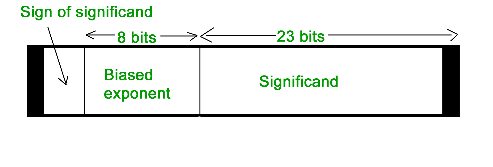
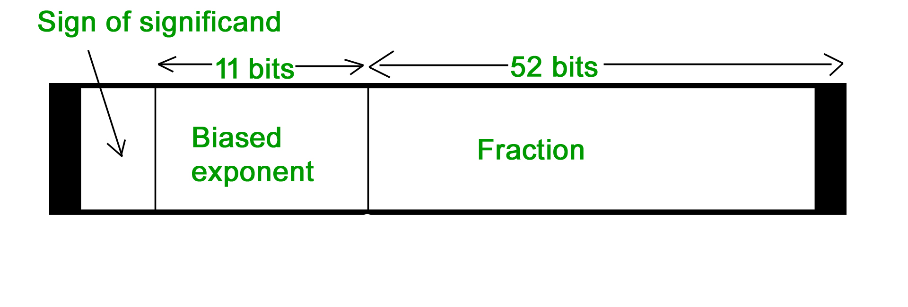

Negative Number Representation
- Sign Magnitude
Sign magnitude is a very simple representation of negative numbers. In sign magnitude the first bit is dedicated to represent the sign and hence it is called sign bit.
Sign bit ‘1’ represents negative sign.
Sign bit ‘0’ represents positive sign.
In sign magnitude representation of a n – bit number, the first bit will represent sign and rest n-1 bits represent magnitude of number.
For example,
- +25 = 011001
Where 11001 = 25
And 0 for ‘+’
- -25 = 111001
Where 11001 = 25
And 1 for ‘-‘.
Range of number represented by sign magnitude method = -(2n-1-1) to +(2n-1-1) (for n bit number)
But there is one problem in sign magnitude and that is we have two representations of 0
+0 = 000000
– 0 = 100000
- 2’s complement method
To represent a negative number in this form, first we need to take the 1’s complement of the number represented in simple positive binary form and then add 1 to it.
For example:
(8)10 = (1000)2
1’s complement of 1000 = 0111
Adding 1 to it, 0111 + 1 = 1000
So, (-8)10 = (1000)2
Please don’t get confused with (8)10 =1000 and (-8)10=1000 as with 4 bits, we can’t represent a positive number more than 7. So, 1000 is representing -8 only.
Range of number represented by 2’s complement = (-2n-1 to 2n-1 – 1)
Floating point representation of numbers
- 32-bit representation floating point numbers IEEE standard

Normalization
{kind=link}
- Floating point numbers are usually normalized
- Exponent is adjusted so that leading bit (MSB) of mantissa is 1
- Since it is always 1 there is no need to store it
- Scientific notation where numbers are normalized to give a single digit before the decimal point like in decimal system e.g. 3.123 x 103
For example, we represent 3.625 in 32 bit format.
Changing 3 in binary=11
Changing .625 in binary
.625 X 2 1
.25 X 2 0
.5 X 2 1
Writing in binary exponent form
3.625=11.101 X 20
On normalizing
11.101 X 20=1.1101 X 21
On biasing exponent = 127 + 1 = 128
(128)10=(10000000) 2
For getting significand
Digits after decimal = 1101
Expanding to 23 bit = 11010000000000000000000
Setting sign bit
As it is a positive number, sign bit = 0
Finally we arrange according to representation
Sign bit exponent significand0 10000000 11010000000000000000000
- 64-bit representation floating point numbers IEEE standard

Again we follow the same procedure upto normalization. After that, we add 1023 to bias the exponent.
{kind=link}
For example, we represent -3.625 in 64 bit format.
Changing 3 in binary = 11
Changing .625 in binary
.625 X 2 1 .25 X 2 0 .5 X 2 1
Writing in binary exponent form
3.625 = 11.101 X 20
On normalizing
11.101 X 20 = 1.1101 X 21
On biasing exponent 1023 + 1 = 1024
(1024)10 = (10000000000)2
So 11 bit exponent = 10000000000
52 bit significand = 110100000000 …………. making total 52 bits
Setting sign bit = 1 (number is negative)
So, final representation
1 10000000000 110100000000 …………. making total 52 bits by adding further 0’s
Converting floating point into decimal
Let’s convert a FP number into decimal
1 01111100 11000000000000000000000
The decimal value of an IEEE number is given by the formula:
(1 -2s) * (1 + f) * 2( e – bias )
where
- s, f and e fields are taken as decimal here.
- (1 -2s) is 1 or -1, depending upon sign bit 0 and 1
- add an implicit 1 to the significand (fraction field f), as in formula
Again, the bias is either 127 or 1023, for single or double precision respectively.
First convert each individual field to decimal.
- The sign bit s is 1
- The e field contains 01111100 = (124)10
- The mantissa is 0.11000 … = (0.75)10
Putting these values in formula
(1 – 2) * (1 + 0.75) * 2124 – 127 = ( – 1.75 * 2-3 ) = – 0.21875